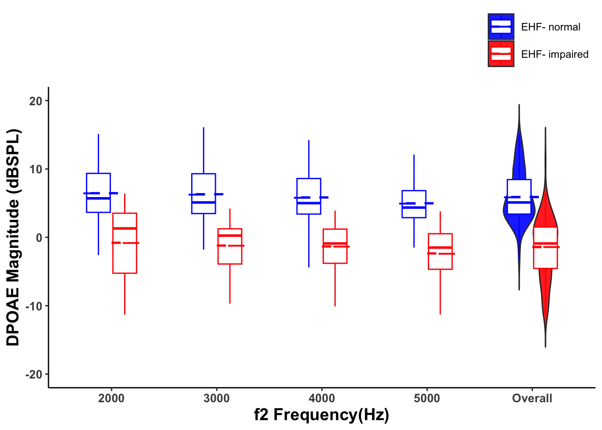
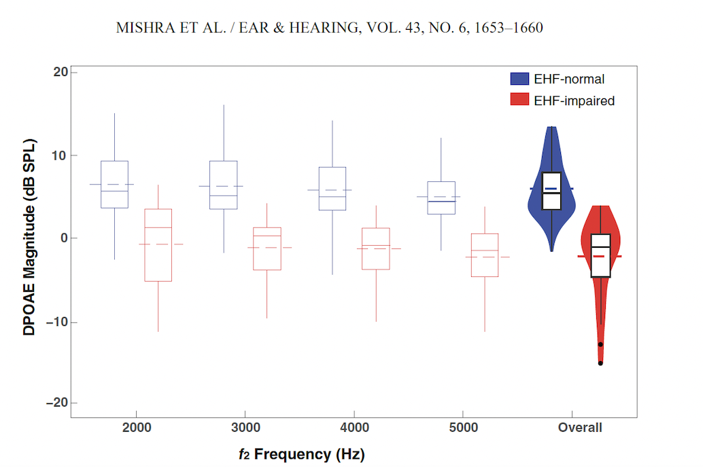
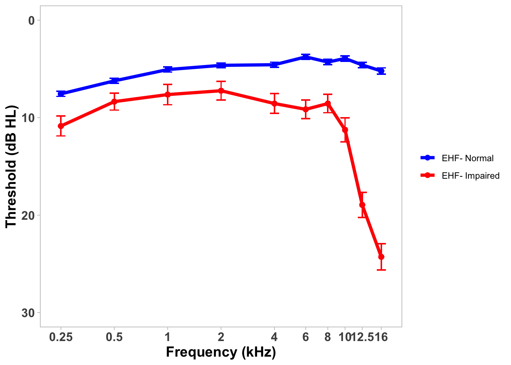
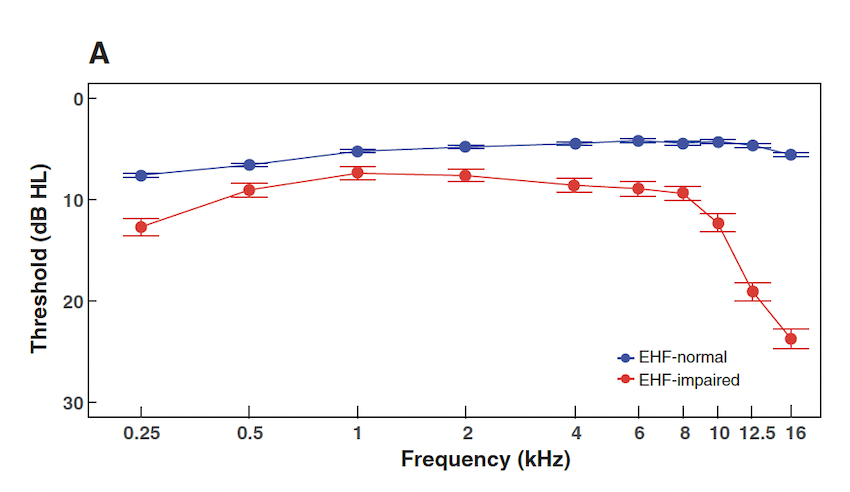

DEFINITION OF COMMON TERMINOLOGIES USED ACROSS AN ARTICLE: GLOSSARY (FOR READERS UNDERSTANDING OF SUBSEQUENT CONTENT KEPT AT THE BEGINING)
i ) Standard Frequency (SF): Refers to frequencies ranging from 250Hz to 8kHz.
ii) Extended High Frequency (EHF): Refers to frequencies ranging from 9kHz to 16kHz. In this article, the author calculated the average thresholds at 10kHz, 12.5kHz, and 16kHz to determine EHF threshold. If the threshold exceeds 20dB at any frequency and in either ear, it is considered as EHF loss.
iii) Otitis Media (OM): Refers to a medical condition caused by recurrent ear infections.
iv) Distortion Product Otoacoustic Emission (DPOAE): A test used to assess the functionality of outer hair cells, which are part of the inner ear structure in humans.
v) PTA : Pure tone average
vi) PTASF : Pure tone average of standard frequencies (average threshold of frequencies 500Hz, 1kHz, 2kHz and 4kHz)
vii) PTAEHF: Pure tone average of extended high frequencies (10kHz, 12.5kHz and 16kHz)
INTRODUCTION OF AN ARTICLE
A) BACKGROUND
Regardless of degree and type, pediatric hearing impairment has a detrimental effect on speech perception, cognition, oral language development, academic outcomes, and literacy. Hearing assessment in the clinic is limited to 8 kHz, although humans can hear up to 20 kHz. Hearing impairment in the extended high frequencies (EHFs > 8 kHz) can occur despite clinically normal hearing. However, the nature and effects of EHF hearing impairment in children remain unknown. This study aimed to determine the effects of EHF hearing impairment on speech-in-noise recognition in children and to examine whether hearing impairment in the EHFs is associated with altered cochlear functioning in the standard frequencies.
B )Methods (In brief)
542 participants (4 to 19 years) with clinically normal audiograms were taken via convenient sampling method. Participants identified with EHF impairment were assigned as cases in a subsequent case-control study. EHF loss was defined as hearing thresholds greater than 20 dB in at least one EHFs (10, 12.5, or 16 kHz). Speech recognition thresholds in multi-talker babble were measured using the digit triplet test. Distortion product otoacoustic emissions (f2 = 2, 3, 4, and 5 kHz) were measured to assess cochlear functioning.
C) Main results and conclusion of an article (in brief)
The study identified thirty-eight children who demonstrated EHF hearing impairment despite presenting clinically normal audiograms. Through a linear mixed-effects model analysis, it was observed that children with EHF hearing impairment exhibited a lower mean DPOAE magnitude compared to those with normal EHF sensitivity. The overall DPOAE magnitude was significantly diminished in the EHF-impaired group relative to the EHF-normal group, with no significant effects of age or history of otitis media (OM) observed. Furthermore, children with EHF impairment displayed relatively higher pure-tone averages for standard audiometric frequencies, indicating potential preclinical cochlear deficits in lower frequencies where hearing thresholds remained normal. These results highlight the prevalence of EHF impairments in children and stress the importance of clinically identifying such impairments, even in the absence of a history of otitis media, to address potential difficulties in speech-in-noise recognition and associated cochlear deficits.
3. DATA ANALYSIS REPLICATION OBJECTIVES:
In this data replication assignment, My objectives are to replicate the following analyses in order to highlight the major findings of the study:
- Overall speech recognition threshold according to age group (Descriptive statistics)
- The extended high frequency threshold for the EHF-normal and EHF-impaired groups (Descriptive statistics).
- Visualization of hearing threshold across frequencies (250Hz-16kHz) for both the EHF-normal and EHF-impaired populations to illustrate the main findings of the study.
- Visualization of DPOAE magnitude for both the EHF-normal and EHF-impaired groups across frequencies.
- Replication of inferential statistics to demonstrate differences in threshold between the groups for both standard frequency and extended high frequency.
- Replication of inferential statistics to confirm differences in DPOAE magnitude while controlling for the effects of age and otitis media infection.
4. **Read the original dataset provided by the authors**
::: {.cell}
```{.r .cell-code}
library(tidyverse)
```
::: {.cell-output .cell-output-stderr}
```
── Attaching core tidyverse packages ──────────────────────── tidyverse 2.0.0 ──
✔ dplyr 1.1.4 ✔ readr 2.1.5
✔ forcats 1.0.0 ✔ stringr 1.5.1
✔ ggplot2 3.5.0 ✔ tibble 3.2.1
✔ lubridate 1.9.3 ✔ tidyr 1.3.1
✔ purrr 1.0.2
── Conflicts ────────────────────────────────────────── tidyverse_conflicts() ──
✖ dplyr::filter() masks stats::filter()
✖ dplyr::lag() masks stats::lag()
ℹ Use the conflicted package (<http://conflicted.r-lib.org/>) to force all conflicts to become errors
```
:::
```{.r .cell-code}
f <- "Data/NHC_DataAna_Sajana.csv"
d <- read.csv(f, header = TRUE, sep = ",")
head(d)
```
::: {.cell-output .cell-output-stdout}
```
SubjectID Age YearsNew Years MonthsNew Months Combined Age_round Age_log
1 ID1 9,3 9, 9 ,3 3 9.250000 9 0.9542
2 ID2 7,1 7, 7 ,1 1 7.083333 7 0.8451
3 ID3 13,8 13 13 ,8 8 13.666667 14 1.1461
4 ID4 9,7 9, 9 ,7 7 9.583333 10 1.0000
5 ID5 11,9 11 11 ,9 9 11.750000 12 1.0792
6 ID6 6,10 6, 6 10 10 6.833333 7 0.8451
AgeLimit Sex Socioeconomic_Status Headphone.2hrs..1.Yes.
1 FALSE F 0
2 FALSE F 0
3 FALSE M 0
4 FALSE M 0
5 FALSE M 0
6 FALSE F 0
Years.of.headphone.use Speech.Lang.Complaint. Spin.in.noise..Y.N
1 <NA> No No
2 <NA> No No
3 <NA> No No
4 <NA> No No
5 <NA> No No
6 <NA> No No
Online.classes.during.COVID R1_250 R1_500 R1_1000 R1_2000 R1_4000 R1_6000
1 5 15 10 5 0 -5
2 5 10 10 0 5 5
3 10 10 5 5 -5 -10
4 5 5 5 0 0 5
5 USED HEADPHONES 5 10 0 -5 -5 -5
6 5 5 0 0 5 5
R1_8000 R1_10000 R1_12500 R1_16000 L1_250 L1_500 L1_1000 L1_2000 L1_4000
1 -5 5 -5 -5 5 5 5 5 -5
2 0 -5 0 -5 10 15 10 15 5
3 -10 -5 5 0 5 10 5 5 10
4 5 0 5 -5 5 5 10 0 0
5 -5 -10 -10 10 10 5 0 0 -5
6 5 -5 5 10 10 10 5 5 0
L1_6000 L1_8000 L1_10000 L1_12000 L1_16000 H.O.Otitismedia.or.PE.tube
1 0 -5 -10 0 5 No
2 5 10 -5 -5 10 No
3 -5 -5 -5 -5 5 No
4 5 5 5 10 -5 No
5 -5 -5 -10 0 5 No
6 0 0 5 0 10 No
H.O_OM.Pus..Pain..etc. HO_OM EarMatched_FDT1 EarMatched_FDT2 EarMatched_BDT1
1 0 NA NA NA
2 0 NA NA NA
3 0 NA NA NA
4 0 NA NA NA
5 0 NA NA NA
6 0 NA NA NA
EarMatched_BDT2 R_DIN L_DIN Gap R2_250 R2_500 R2_1000 R2_2000 R2_4000 R2_6000
1 NA -6.9 -9.8 NA NA NA NA NA NA
2 NA -5.7 -5.1 NA NA NA NA NA NA
3 NA -10.4 -9.2 NA NA NA NA NA NA
4 NA -8.5 -8.7 NA NA NA NA NA NA
5 NA -11.2 -13.8 NA NA NA NA NA NA
6 NA -6.6 -9.1 NA NA NA NA NA NA
R2_8000 R2_10000 R2_12500 R2_16000 L2_250 L2_500 L2_1000 L2_2000 L2_4000
1 NA NA NA NA NA NA NA NA NA
2 NA NA NA NA NA NA NA NA NA
3 NA NA NA NA NA NA NA NA NA
4 NA NA NA NA NA NA NA NA NA
5 NA NA NA NA NA NA NA NA NA
6 NA NA NA NA NA NA NA NA NA
L2_6000 L2_8000 L2_10000 L2_12500 L2_16000 R_2K.NF R_2K.Amp R_2K.SNR R_3K.NF
1 NA NA NA NA NA NA NA NA
2 NA NA NA NA NA NA NA NA
3 NA NA NA NA NA NA NA NA
4 NA NA NA NA NA NA NA NA
5 NA NA NA NA NA NA NA NA
6 NA NA NA NA NA NA NA NA
R_3K.Amp R_3K.SNR R_4K.NF R_4K.Amp R_4K.SNR R_5K.NF R_5K.Amp R_5K.SNR L_2K.NF
1 NA NA NA NA NA NA NA NA NA
2 NA NA NA NA NA NA NA NA NA
3 NA NA NA NA NA NA NA NA NA
4 NA NA NA NA NA NA NA NA NA
5 NA NA NA NA NA NA NA NA NA
6 NA NA NA NA NA NA NA NA NA
L_2K.Amp L_2K.SNR L_3K.NF L_3K.Amp L_3K.SNR L_4K.NF L_4K.Amp L_4K.SNR L_5K.NF
1 NA NA NA NA NA NA NA NA NA
2 NA NA NA NA NA NA NA NA NA
3 NA NA NA NA NA NA NA NA NA
4 NA NA NA NA NA NA NA NA NA
5 NA NA NA NA NA NA NA NA NA
6 NA NA NA NA NA NA NA NA NA
L_5K.Amp L_5K.SNR R250_avg R500_avg R1000_avg R2000_avg R4000_avg R6000_avg
1 NA NA 5 15 10 5 0 -5
2 NA NA 5 10 10 0 5 5
3 NA NA 10 10 5 5 -5 -10
4 NA NA 5 5 5 0 0 5
5 NA NA 5 10 0 -5 -5 -5
6 NA NA 5 5 0 0 5 5
R8000_avg R_SF_avg R_SP_avg R10000_avg R12500_avg R16000_avg R_EHF_avg
1 -5 3.5714 7.50 5 -5 -5 -1.6667
2 0 5.0000 6.25 -5 0 -5 -3.3333
3 -10 0.7143 3.75 -5 5 0 0.0000
4 5 3.5714 2.50 0 5 -5 0.0000
5 -5 -0.7143 0.00 -10 -10 10 -3.3333
6 5 3.5714 2.50 -5 5 10 3.3333
L250_avg L500_avg L1000_avg L2000_avg L4000_avg L6000_avg L8000_avg L_SF_avg
1 5 5 5 5 -5 0 -5 1.4286
2 10 15 10 15 5 5 10 10.0000
3 5 10 5 5 10 -5 -5 3.5714
4 5 5 10 0 0 5 5 4.2857
5 10 5 0 0 -5 -5 -5 0.0000
6 10 10 5 5 0 0 0 4.2857
L_SP_avg L10000_avg L12500_avg L16000_avg L_EHF_avg EHF_loss_R EHF_loss_L
1 2.50 -10 0 5 -1.6667 0 0
2 11.25 -5 -5 10 0.0000 0 0
3 7.50 -5 -5 5 -1.6667 0 0
4 3.75 5 10 -5 3.3333 0 0
5 0.00 -10 0 5 -1.6667 0 0
6 5.00 5 0 10 5.0000 0 0
EHF_bilateral EHF_uni EHFLossGroup EHF_Loss_Group_Update EHF_uni_R EHF_uni_L
1 0 0 0 0 0 0
2 0 0 0 0 0 0
3 0 0 0 0 0 0
4 0 0 0 0 0 0
5 0 0 0 0 0 0
6 0 0 0 0 0 0
R10000.20 R10000.20...Bi R10000.20...Uni R12500.20 R12500.20...Bi
1 0 0 0 0 0
2 0 0 0 0 0
3 0 0 0 0 0
4 0 0 0 0 0
5 0 0 0 0 0
6 0 0 0 0 0
R12500.20...Uni R16000.20 R16000.20...Bi R16000.20...Uni L10000.20
1 0 0 0 0 0
2 0 0 0 0 0
3 0 0 0 0 0
4 0 0 0 0 0
5 0 0 0 0 0
6 0 0 0 0 0
L10000.20...Bi L10000.20...Uni L12500.20 L12500.20...Bi L12500.20...Uni
1 0 0 0 0 0
2 0 0 0 0 0
3 0 0 0 0 0
4 0 0 0 0 0
5 0 0 0 0 0
6 0 0 0 0 0
L16000.20 L16000.20...Bi L16000.20...Uni R10Konly R12Konly R16Konly
1 0 0 0 0 0 0
2 0 0 0 0 0 0
3 0 0 0 0 0 0
4 0 0 0 0 0 0
5 0 0 0 0 0 0
6 0 0 0 0 0 0
R10K.12Konly R10K.16konly R12K.16konly ALL R_SNR_avg L_SNR_Avg R_DPOE L_DPOE
1 0 0 0 0 NA NA NA NA
2 0 0 0 0 NA NA NA NA
3 0 0 0 0 NA NA NA NA
4 0 0 0 0 NA NA NA NA
5 0 0 0 0 NA NA NA NA
6 0 0 0 0 NA NA NA NA
AvgEHF_R_Set1 AvgEHF_L_Set1 AvgEHF_R_Set2 AvgEHF_L_Set2 AvgSF_R_Set1
1 -1.666667 -1.666667 NA NA 3.5714286
2 -3.333333 0.000000 NA NA 5.0000000
3 0.000000 -1.666667 NA NA 0.7142857
4 0.000000 3.333333 NA NA 3.5714286
5 -3.333333 -1.666667 NA NA -0.7142857
6 3.333333 5.000000 NA NA 3.5714286
AvgSF_L_Set1 AvgSF_R_Set2 AvgSF_L_Set2 SES_Status Poor_DIN
1 1.428571 NA NA Em 0
2 10.000000 NA NA Em 0
3 3.571429 NA NA Em 0
4 4.285714 NA NA Em 0
5 0.000000 NA NA Em 0
6 4.285714 NA NA Em 0
```
:::
```{.r .cell-code}
ncol(d)
```
::: {.cell-output .cell-output-stdout}
```
[1] 164
```
:::
```{.r .cell-code}
nrow(d)
```
::: {.cell-output .cell-output-stdout}
```
[1] 542
```
:::
:::
5. **REPLICATION OF DESCRIPTIVE STATISTICS**
A ) Retrieve the subset of data containing the Right and Left digit in noise (DIN) values. Compute the average DIN by taking the mean of the Right and Left ear readings. Reorganize the dataset, naming it as EHF_Dataset. Calculate the mean and standard deviation of the speech recognition threshold according to age group
library(dplyr)library(tidyverse)# 'EHF_DATASET.csv' contains dataset of f <-"Data/EHF_DATASET.csv"d <-read.csv(f, header =TRUE, sep =",")# Filter missing values and ages above 15d <- d %>%filter(!is.na(Average_DIN), # Filter rows where Average_DIN is not missing Age_round >=4, # Filter rows where Age_round is greater than or equal to 4 Age_round <=15) # Filter rows where Age_round is less than or equal to 15# Create a new column for age ranged <- d %>%mutate(age_range =case_when( Age_round %in%c(4, 5) ~"4-5", Age_round %in%c(6, 7, 8) ~"6-8", Age_round %in%c(9, 10, 11, 12) ~"9-12", Age_round %in%c(5, 6, 7, 8, 9, 10, 11, 12, 13, 14, 15) ~"5-15" ))# Calculate mean and SD for each age rangesummary_stats <- d %>%group_by(age_range) %>%summarize(mean_Average_DIN =mean(Average_DIN, na.rm =TRUE),sd_Average_DIN =sd(Average_DIN, na.rm =TRUE))# Create the table like in articleresult <- summary_stats %>%mutate(Present_study =paste(round(mean_Average_DIN, 2), "(", "\u00B1", round(sd_Average_DIN, 2), ")", sep ="")) %>%select(age_range, Present_study)print(result)
Comparison with the original article findings: In the above code, I attempted to replicate the mean and standard deviation of speech recognition threshold according to age group. The mean and standard deviation reported in the original paper were -4.58 (1.49), -7.11 (2.37), -9.96 (2.80), and -8.29 (3.22) for the age groups 4-5, 6-8, 9-12, and 5-15 years, respectively.
Based on the output obtained above, although there is slight variation after the decimal value, we were able to replicate the mean and standard deviation for three age groups: 4-5, 6-9, and 9-12 years. However, I found a different mean and standard deviation for the age group 5-15. The original article reported a mean of -8.29 (3.22) for the 5-15 years age range, whereas my calculation showed -9.78 (±2.48).
There could be several reasons for this discrepancy:
The authors might have removed outliers during their calculations.
The authors could have updated the age range during the publication, and they might not have provided an updated data sheet.
B) Calculate Pure tone average of extended high frequencies for EHF Normal and EHF Impaired participants
library(tidyverse)# Read the dataf <-"Data/threshold.csv"d <-read_csv(f, col_types =cols(Group =col_character()))# Calculate average threshold and standard deviation for each groupsummary_stats <- d %>%group_by(Group) %>%summarize(Average_Threshold =mean(PTA_Avg_EHF, na.rm =TRUE),SD_Threshold =sd(PTA_Avg_EHF, na.rm =TRUE))# Print the resultprint(summary_stats)
# A tibble: 2 × 3
Group Average_Threshold SD_Threshold
<chr> <dbl> <dbl>
1 EHF- Impaired 18.4 5.65
2 EHF- Normal 4.82 5.10
Comparison with original paper findings: The original paper reported mean PTAEHF values of 5 (SD = 5) and 18 dB HL (SD = 4) for EHF-normal and EHF-impaired children, respectively. Based on the output obtained above, we were able to replicate the PTAEHF values for both the EHF-Normal and EHF-Impaired groups. It’s worth noting that in the article, they rounded the values to rounded whole numbers, which matches our replicated findings.
REPLICATION OF VISUALIZATION OF DATA
A) Create a separate dataset by including DPOAE data from the original dataframe. Read this dataset and generate boxplots for DPOAE Magnitude according to frequencies, distinguishing between two groups: EHF Normal and EHF Impaired. Additionally, include violin plots to represent the overall magnitude for both the EHF Loss and EHF Normal groups.
# Define custom summary function for meancustom_summary <-function(x) { mean_val <-mean(x)return(data.frame(y = mean_val))}# Reorder levels of Group variabled$Group <-factor(d$Group, levels =c("EHF- normal", "EHF- impaired"))# Create the plotggplot(d, aes(x =as.factor(Freq), y = DPOAE_Magnitude, fill = Group)) +geom_boxplot(data =filter(d, Freq !="Overall"), width =0.5,outlier.shape =NA, na.rm =TRUE, aes(color = Group), fill ="white") +geom_violin(data =filter(d, Freq =="Overall"),aes(x =as.factor(Freq), y = DPOAE_Magnitude, group = Group, fill = Group), trim =FALSE,alpha =0.9, position =position_dodge(width =0.5),width =0.6) +geom_boxplot(data =filter(d, (Freq =="Overall"& Group %in%c("EHF- normal", "EHF- impaired"))),width =0.5,outlier.shape =NA,aes(color = Group),fill ="white") +stat_summary(data = d,aes(x =as.factor(Freq), group = Group, fill = Group, color = Group), fun.data = custom_summary,geom ="point", position =position_dodge(0.75), size =8, shape =95) +scale_fill_manual(values =c("EHF- normal"="blue", "EHF- impaired"="red")) +labs(x ="f2 Frequency(Hz)", y ="DPOAE Magnitude (dBSPL)") +scale_color_manual(values =c("EHF- normal"="blue", "EHF- impaired"="red")) +theme_classic() +theme(axis.title.x =element_text(face ="bold", size =14),axis.title.y =element_text(face ="bold", size =14),axis.text.x =element_text(face ="bold", size =10), # Adjust size of x-labelaxis.text.y =element_text(face ="bold", size =10), legend.position ="top", legend.direction ="vertical",legend.justification ="right", # Placing legend representation on the right as in original articlelegend.box.just ="right",legend.title =element_blank(), # Removing legend title) +ylim(-20, 20) +stat_summary(data = d,aes(x =as.factor(Freq), y = DPOAE_Magnitude, group = Group, color = Group),fun = mean, geom ="point", position =position_dodge(0.75), size =3, shape =95) +geom_segment(data = d %>%group_by(Freq, Group) %>%summarise(mean_val =mean(DPOAE_Magnitude)),aes(x =as.numeric(as.factor(Freq)) -0.1, xend =as.numeric(as.factor(Freq)) +0.1, y = mean_val, yend = mean_val, color = Group),size =0.9, linetype ="dashed", position =position_dodge(0.4))
`summarise()` has grouped output by 'Freq'. You can override using the
`.groups` argument.

Comparison with the original paper: I am able to replicate the box violin plot as represented in the original paper (dashed horizontal line represent the mean).Here is the original figure represented from an article:

B) Hearing thresholds across frequencies for both the EHF-Normal and EHF-Impaired groups.
library(tidyverse)# Read the dataf <-"Data/threshold.csv"d <-read_csv(f, col_types =cols(Group =col_character()))# Define frequency labels in kHzfrequency_labels <-c(0.25, 0.5, 1, 2, 4, 6, 8, 10, 12.5, 16)# Convert data to long format for ggplotdata_long <- d %>%pivot_longer(cols =starts_with("R"), names_to ="Frequency", values_to ="Hearing_threshold") %>%mutate(Frequency =as.numeric(gsub("R([0-9]+)_avg", "\\1", Frequency)) /1000)# Calculate mean and standard error of the mean (SEM) for each frequency and groupsummary_stats <- data_long %>%group_by(Group, Frequency) %>%summarise(mean =mean(Hearing_threshold, na.rm =TRUE),sem =ifelse(n() ==0, 0, sd(Hearing_threshold, na.rm =TRUE) /sqrt(n())), # Calculate SEM; if n() == 0, set SEM to 0.groups ="drop" )# Merge summary statistics with the long-format datadata_long <-left_join(data_long, summary_stats, by =c("Group", "Frequency")) %>%mutate(ymin = mean - sem,ymax = mean + sem)# Define breaks and labels for x-axisx_breaks <-c(0.25, 0.5, 1, 2, 4, 6, 8, 10, 12.5, 16)x_labels <-c("0.25", "0.5", "1", "2", "4", "6", "8", "10", "12.5", "16")# Plotting with ggplot2ggplot(data_long, aes(x = Frequency, y = mean, color = Group)) +geom_errorbar(aes(ymin = ymin, ymax = ymax), width =0.05) +geom_point(size =2) +geom_line(size =1.5, aes(group = Group)) +scale_color_manual(values =c("red", "blue")) +labs(x ="Frequency (kHz)", y ="Threshold (dB HL)") +theme_light() +theme(axis.text =element_text(face="bold", size =12),axis.title =element_text(size =14, face ="bold"),plot.title =element_text(size =16, face ="bold"),panel.grid =element_blank()) +# Remove gridlinesscale_x_log10(breaks = x_breaks, labels = x_labels) +# Set x-axis to log scale with adjusted breaks and labelsscale_y_reverse(limits =c(30, 0)) +# Set y-axis limits from 30 to 0guides(color =guide_legend(title =NULL, reverse =TRUE)) # Remove legend title to match article formating

Comparison to the original paper: In this visualization, I am able to replicate almost identical results as presented in the original paper. However, I noticed that the standard error for the EHF-Impaired group was larger than reported in the original paper. One possible reason for this discrepancy could be that the authors had removed outliers during their analysis. Below is the original figure from an article:

REPLICATION OF INFERENTIAL STATISTICS
A) Conduct a t-test to determine the mean difference in hearing threshold at both standard frequency and Extended High-Frequency (EHF) for both the EHF-Normal and EHF-Impaired groups.”
library(tidyverse)library(dplyr)library(effectsize)# Read the dataf <-"Data/threshold.csv"d <-read_csv(f, col_types =cols(Group =col_character()))#For standard frequency average, extract the means for each groupmeans <-aggregate(PTA_Avg_SF ~ Group, data = d, FUN = mean)# Extract the mean for the EHF-Impaired groupmean_impaired <- means$`PTA_Avg_SF`[means$Group =="EHF- Impaired"]# Extract the mean for the EHF-Normal groupmean_normal <- means$`PTA_Avg_SF`[means$Group =="EHF- Normal"]# Calculate the difference between the means (to show as in article)mean_difference_sf <- mean_impaired - mean_normal# Print the differenceprint(mean_difference_sf)
[1] 3.767184
#For extended high frequency average , extract the means for each groupmeans <-aggregate(PTA_Avg_EHF ~ Group, data = d, FUN = mean)# Extract the mean for the EHF-Impaired groupmean_impaired <- means$`PTA_Avg_EHF`[means$Group =="EHF- Impaired"]# Extract the mean for the EHF-Normal groupmean_normal <- means$`PTA_Avg_EHF`[means$Group =="EHF- Normal"]# Calculate the difference between the means (to represent as in article)mean_difference_ehf <- mean_impaired - mean_normal# Print the differenceprint(mean_difference_ehf)
[1] 13.55246
# Subset the data into two groups: EHF-Normal and EHF-Impaired for PTA_SFgroup_control <- d$PTA_Avg_SF[d$Group =="EHF- Normal"]group_impaired <- d$PTA_Avg_SF[d$Group =="EHF- Impaired"]# Perform independent samples t-test for PTA_SF ( I was confused regarding the type of test used in the article (between two sample t-test or ANOVA) as it was not mentioned in the article clearly.However, author confirmed, independent t-test was used )t_test_result <-t.test(group_control, group_impaired)t_test_result
Welch Two Sample t-test
data: group_control and group_impaired
t = -7.8276, df = 45.638, p-value = 5.602e-10
alternative hypothesis: true difference in means is not equal to 0
95 percent confidence interval:
-4.736136 -2.798232
sample estimates:
mean of x mean of y
5.327736 9.094920
# Create an ANOVA model for calculating effect size used in articleanova_model_SF <-aov(PTA_Avg_SF ~ Group, data = d)summary(anova_model_SF)
Df Sum Sq Mean Sq F value Pr(>F)
Group 1 501 501.5 43.92 8.28e-11 ***
Residuals 540 6165 11.4
---
Signif. codes: 0 '***' 0.001 '**' 0.01 '*' 0.05 '.' 0.1 ' ' 1
# Perform independent samples t-test for PTA_EHF (there are two group mean), two sample t-test is administedt_test_result <-t.test(group_control, group_impaired)t_test_result
Welch Two Sample t-test
data: group_control and group_impaired
t = -7.8276, df = 45.638, p-value = 5.602e-10
alternative hypothesis: true difference in means is not equal to 0
95 percent confidence interval:
-4.736136 -2.798232
sample estimates:
mean of x mean of y
5.327736 9.094920
# Create an ANOVA for calculating partial omega squaredanova_model_EHF <-aov(PTA_Avg_EHF ~ Group, data = d)summary(anova_model_EHF)
Df Sum Sq Mean Sq F value Pr(>F)
Group 1 6490 6490 246 <2e-16 ***
Residuals 540 14246 26
---
Signif. codes: 0 '***' 0.001 '**' 0.01 '*' 0.05 '.' 0.1 ' ' 1
COMPARISION WITH ORIGINAL PAPER: The output obtained aligns consistently with the findings reported in the original paper. Specifically, the original article noted that EHF-impaired children exhibited a 3.76 dB higher PTASF and a 13.45 dB higher PTAEHF compared to controls. Additionally, the original article provided 95% confidence intervals for PTASF (2.56 to 4.80) and PTAEHF (11.73 to 15.16), which were mirrored in the output obtained from the code execution. Furthermore, both PTASF (p < 0.001, partial ω2 = 0.07) and PTAEHF (p < 0.001, partial ω2 = 0.30) were reported to have statistically significant differences between the EHF-impaired group and the EHF normal group in the original article. Similarly, the output from above code also mirrored these values. Therefore, findings have been successfully replicated.
B) Read the dataset and modify the data to prepare for running a linear mixed model effect on DPOAE Magnitude among the EHF loss and EHF Normal groups. Apply the linear mixed model effect to assess the difference in DPOAE magnitude while controlling for the effects of age and Otitis Media.
library(rstatix)
Attaching package: 'rstatix'
The following objects are masked from 'package:effectsize':
cohens_d, eta_squared
The following object is masked from 'package:stats':
filter
library(lme4) # for getting p-value as well in summary
Loading required package: Matrix
Attaching package: 'Matrix'
The following objects are masked from 'package:tidyr':
expand, pack, unpack
# d is the dataset containg DPOAE data, fitting linear mixed model effect in the dataset controlling the effect of age and otitis mediamixed_model <-lmer(DPOAE_AVG ~ Age_log + EHFLoss + HO_OM + (1|SubjectID), data = d, REML =FALSE)summary(mixed_model)
Linear mixed model fit by maximum likelihood . t-tests use Satterthwaite's
method [lmerModLmerTest]
Formula: DPOAE_AVG ~ Age_log + EHFLoss + HO_OM + (1 | SubjectID)
Data: d
AIC BIC logLik deviance df.resid
457.4 472.7 -222.7 445.4 88
Scaled residuals:
Min 1Q Median 3Q Max
-1.79156 -0.50070 0.01718 0.50879 1.85461
Random effects:
Groups Name Variance Std.Dev.
SubjectID (Intercept) 15.196 3.898
Residual 1.407 1.186
Number of obs: 94, groups: SubjectID, 47
Fixed effects:
Estimate Std. Error df t value Pr(>|t|)
(Intercept) 1.0520 4.1377 33.4765 0.254 0.80085
Age_log 3.6498 4.1490 33.8039 0.880 0.38525
EHFLoss -2.4663 0.7183 67.4002 -3.434 0.00102 **
HO_OM -1.8261 2.0866 33.4389 -0.875 0.38772
---
Signif. codes: 0 '***' 0.001 '**' 0.01 '*' 0.05 '.' 0.1 ' ' 1
Correlation of Fixed Effects:
(Intr) Age_lg EHFLss
Age_log -0.988
EHFLoss 0.028 -0.077
HO_OM 0.001 -0.045 0.013
# Summary of the mixed model summary_model <-summary(mixed_model)print(summary_model)
Linear mixed model fit by maximum likelihood . t-tests use Satterthwaite's
method [lmerModLmerTest]
Formula: DPOAE_AVG ~ Age_log + EHFLoss + HO_OM + (1 | SubjectID)
Data: d
AIC BIC logLik deviance df.resid
457.4 472.7 -222.7 445.4 88
Scaled residuals:
Min 1Q Median 3Q Max
-1.79156 -0.50070 0.01718 0.50879 1.85461
Random effects:
Groups Name Variance Std.Dev.
SubjectID (Intercept) 15.196 3.898
Residual 1.407 1.186
Number of obs: 94, groups: SubjectID, 47
Fixed effects:
Estimate Std. Error df t value Pr(>|t|)
(Intercept) 1.0520 4.1377 33.4765 0.254 0.80085
Age_log 3.6498 4.1490 33.8039 0.880 0.38525
EHFLoss -2.4663 0.7183 67.4002 -3.434 0.00102 **
HO_OM -1.8261 2.0866 33.4389 -0.875 0.38772
---
Signif. codes: 0 '***' 0.001 '**' 0.01 '*' 0.05 '.' 0.1 ' ' 1
Correlation of Fixed Effects:
(Intr) Age_lg EHFLss
Age_log -0.988
EHFLoss 0.028 -0.077
HO_OM 0.001 -0.045 0.013
# Calculate confidence intervals CI <-confint(mixed_model)
Comparison with the original paper: The results obtained from the execution of the above code were consistent with those reported in the original paper. Specifically,the original article reported the overall DPOAE magnitude was significantly lower for the EHF-impaired group compared to the EHF-normal group (β = -2.47, 95% CI: -4.60 to -0.73, p < 0.001, partial ω2 = 0.13). The result that are obtained from above code are exactly similar as reported in the original article.Furthermore, the original article reported effects of age and Otitis media history were not significant (age: β = 3.65, 95% CI: -4.83 to 11.93, p = 0.38; OM history: β = -1.83, 95% CI: -6.02 to 2.39, p = 0.38), which aligns with the output obtained above from the above executed code.
DISCUSSION AND REFLECTION: In completing the replication assignment, I successfully reproduced much of the content; however, I encountered difficulty in comprehending the statistical analysis employed by the author. A thorough explanation of the statistical methods utilized would have greatly aided in understanding their methodology. Without this information, it was challenging to accurately replicate their approach. After several attempts, I managed to infer their methodology.
Notably, the author omitted any mention of outlier removal and missing value handling in the method section. This omission complicated the calculation of standard errors and standard deviations. It would have been preferable if the author had provided a detailed description of the statistical methods employed, including any steps taken to address outliers and missing data.
REFERENCES:
Lakens, D. (2013). Calculating and reporting effect sizes to facilitate cumulative science: a practical primer for t-tests and ANOVAs. Front Psychol, 4, 863. https://doi.org/10.3389/fpsyg.2013.00863
Mishra, S. K., Saxena, U., & Rodrigo, H. (2022). Hearing Impairment in the Extended High Frequencies in Children Despite Clinically Normal Hearing. Ear Hear, 43(6), 1653-1660. https://doi.org/10.1097/AUD.0000000000001225